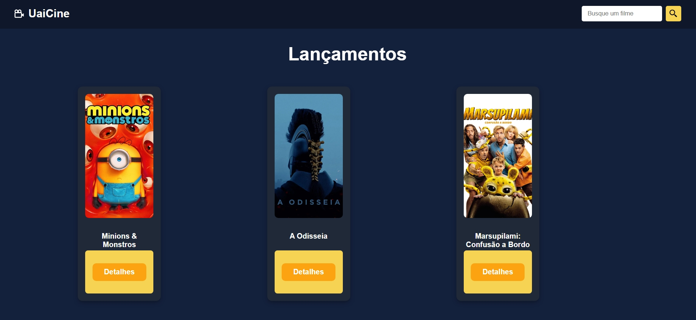
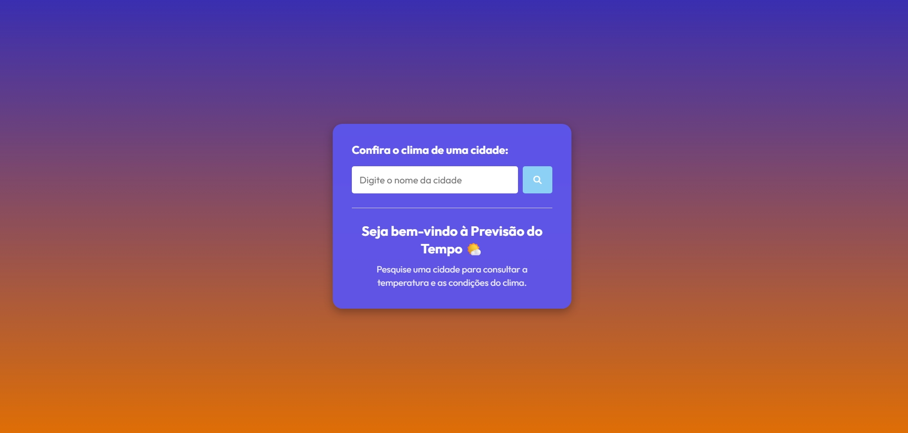

Sobre mim
Olá, sou Matheus Duraes, Desenvolvedor Front-End em formação, com foco na criação de interfaces modernas, responsivas e intuitivas. Sou formado em Assistente de Programação Web pelo SENAI CTTI e atualmente curso Análise e Desenvolvimento de Sistemas pela Newton Paiva | Wyden. Possuo conhecimentos em HTML, CSS, JavaScript e React, aplicando boas práticas de desenvolvimento, organização de código e componentização de interfaces. Tenho interesse em tecnologia, inovação e aprendizado contínuo, buscando evoluir constantemente como desenvolvedor e transformar meus conhecimentos em projetos práticos.
Tecnologias
Formação Acadêmica
Newton Paiva | Wyden
Março de 2026 - Junho de 2028
SENAI CTTI
Janeiro de 2025 - Dezembro de 2025
Escola Estadual Madre Carmelita
2021 - 2023
Cursos Extras Curriculares
IFMG - Maio de 2026
Faculdade de Tecnologia Rocketseat - Julho de 2026
SENAI CTTI - Novembro de 2025
Hashtag Treinamentos - Outubro de 2025
Hashtag Treinamentos - Setembro de 2025
Udemy - Julho de 2024
Prodabel - Fevereiro de 2024
Projetos
O Caldeirão dos Sabores

Projeto de desenvolvimento Front-End focado
em uma experiência visual moderna para
apresentação de receitas e conteúdos
gastronômicos.
Foi desenvolvido aplicando conceitos de
responsividade, organização de layout e
experiência do usuário.
Tecnologias:
HTML, CSS, JavaScript, Google Fonts,
Canvas e ScrollReveal.
Lista de Tarefas

Aplicação de gerenciamento de tarefas
desenvolvida para praticar integração
entre Front-End e Back-End.
O sistema permite criação, organização
e armazenamento de tarefas utilizando
banco de dados.
Tecnologias:
HTML, CSS, JavaScript, PHP e MySQL.
Jogo da Velha

Projeto desenvolvido para aplicar lógica
de programação, estrutura de decisões e
interação com usuário.
Uma versão personalizada do clássico
jogo da velha, utilizando conceitos de
programação e interface visual.
Tecnologias:
Python, HTML e CSS.
Super Mario Pulos

Jogo desenvolvido utilizando JavaScript
puro, com movimentação de personagem,
animações, obstáculos e sistema de colisão.
Projeto focado em lógica de programação,
interatividade e manipulação do DOM.
Tecnologias:
HTML, CSS e JavaScript.
Pac-Man
Recriação do clássico jogo Pac-Man
utilizando HTML, Canvas e JavaScript.
O projeto possui movimentação, sistema
de pontuação, vidas, colisões, mapa em
matriz e animações.
Tecnologias:
HTML, Canvas, JavaScript e CSS.
UaiCine

Aplicação web de catálogo de filmes
desenvolvida com foco em experiência
do usuário e consumo de dados.
O projeto apresenta filmes, organização
por componentes, interface responsiva e
integração com API REST.
Foi desenvolvido aplicando conceitos
modernos de desenvolvimento Front-End.
Tecnologias:
React, JavaScript, CSS, Vite,
REST API e JSON.
Previsão do Tempo

Aplicação web de previsão do tempo desenvolvida
com HTML, CSS e JavaScript, integrada à API
OpenWeatherMap.
O projeto permite pesquisar diferentes cidades
e visualizar informações como temperatura,
condições climáticas, umidade, velocidade do
vento e bandeira do país.
A interface foi desenvolvida com foco em
responsividade, organização visual e experiência
do usuário.
Tecnologias:
HTML, CSS, JavaScript, OpenWeatherMap API,
REST API e JSON.